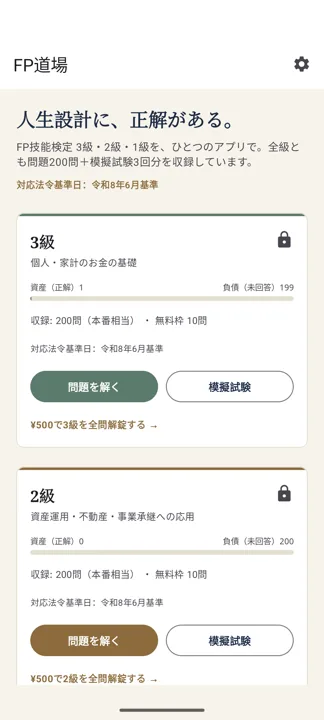
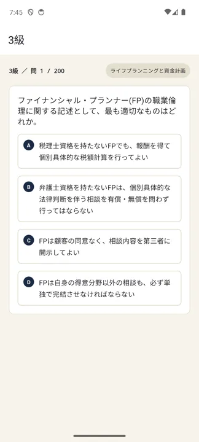
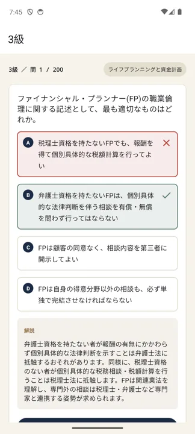

FP技能検定 3級・2級・1級 対策アプリ
過去問を、スキマ時間で回しきる。
「FP道場」は、FP技能検定（ファイナンシャル・プランニング技能検定）に特化した問題演習アプリです。各級とも本試験相当の200問＋模擬試験3回分を収録。6分野を分野別に演習し、解いた直後にその場で解説を確認できます。
アプリでできること
インプットは教材で。このアプリは「解く → その場で解説 → 弱点をつぶす」をひたすら回すための道具です。
- 各級とも本試験相当の200問を収録
- 6分野（ライフプランニング／リスク管理／金融資産運用／タックスプランニング／不動産／相続・事業承継）の分野別演習
- 解答直後にその場で解説を確認できる「演習モード」
- タイマー付き「模擬試験モード」（各級3回分・各20問）、採点後にまとめて全問復習
- 正解数・進捗を記録し、いつでも続きから
- 各級10問まで無料。全問＋模試の解放は級ごとに¥500（買い切り・期限なし）



収録している問題は、FP技能検定の出題範囲と最新の税制・法令に基づいて作成しています。学習の判断は必ず最新の公式教材・法令もあわせてご確認ください。
01合格までの学習ロードマップ
FP3級・2級は「広く浅く、過去問の頻出パターンを固める」試験です。深追いより回転数がものを言います。
全体像：4フェーズで進める
フェーズ1｜全体像インプット（1〜2週間）テキストを6分野ざっと1周。用語と制度の「地図」を作るのが目的で、暗記はまだしない。分からない所は付箋だけ貼って先へ進む。
フェーズ2｜分野別に演習（4〜6週間）1分野ずつ「解く→即解説→間違いをメモ」。各分野で正答率80%を目安に。FP道場の演習モードを分野で絞り、間違えた問題だけを繰り返す。
フェーズ3｜模擬試験で通し練習（2週間）模擬試験モードを時間を計って解く。時間配分、計算のスピード、マークミス対策を体で覚える。終わったら弱点分野をフェーズ2のやり方で再演習。
フェーズ4｜直前1週間間違いノートと頻出論点の総ざらい。係数計算・所得税・相続税の計算は毎日手を動かす。新しい教材には手を出さない。
分野ごとの狙いどころ
| 分野 | 特徴 | 優先度 |
|---|---|---|
| ライフプランニングと資金計画 | 社会保険・年金・6つの係数。頻出で得点源になりやすい | 高（先に固める） |
| タックスプランニング | 所得税の計算の流れを一度理解すれば安定して取れる | 高 |
| リスク管理 | 保険商品の基本と税務。暗記中心で対策しやすい | 中〜高 |
| 金融資産運用 | 債券利回り・株式指標・NISA。数字と制度改正で差がつく | 中 |
| 不動産 | 建蔽率・容積率、譲渡所得の特例。計算に慣れが必要 | 中 |
| 相続・事業承継 | 相続税・贈与税の計算と基礎控除。2級で差がつきやすい | 中（2級は重点） |
過去問の回し方（3周ルール）
- 1周目：全問を解く。分からなくてもすぐ解説を読み、「なぜその答えか」を1行でメモ。
- 2周目：間違えた問題＋自信がなかった問題だけ。ここで正答率80%を目指す。
- 3周目：直前期に全問を高速で。瞬時に答えと理由が出るかを確認する。
実技試験について：日本FP協会は「資産設計提案業務」、きんざいは「個人資産相談業務」など、団体・級で実技の内容が異なります。自分が申し込む団体の過去問形式に必ず慣れておきましょう。
02本試験までのスケジュールの組み方
FP3級・2級はCBT（テストセンターで通年受検）です。「受検日を先に決めて逆算する」のが最大のコツです。
ステップ1：受検日を仮予約する
申込サイトで空き枠を確認し、今日から8〜12週間後を目安に受検日を予約します。日付が決まると勉強が一気に進みます（CBTは変更・キャンセル規定があるので条件は確認を）。
ステップ2：受検日から逆算する
| 時期 | やること |
|---|---|
| 受検日 −1週間 | 間違いノート＋頻出論点の総復習。計算問題を毎日 |
| 受検日 −1か月 | 模擬試験フェーズ。時間を計って通し演習＋弱点の再演習 |
| 受検日 −2.5か月 | 分野別演習を開始（1分野あたり4〜6日） |
| 今日〜2週間 | テキストで全体像を1周（暗記しない） |
ステップ3：学習時間の目安
- FP3級：おおむね80〜150時間（1日1時間なら約2〜3か月）
- FP2級：おおむね150〜300時間（1日1〜1.5時間なら約4〜6か月）
週次テンプレート（平日1h・休日2h の例）
| 曜日 | 内容 |
|---|---|
| 月・火・水 | その週の対象分野を演習モードで各30〜40問＋解説 |
| 木 | 間違えた問題だけ再演習 |
| 金 | 係数・税額など計算問題を集中演習 |
| 土 | 対象分野の仕上げ＋前週分野の復習 |
| 日 | 模擬試験1回（直前期）／または遅れの取り戻し |
仕事や家庭の状況で必ず遅れは出ます。バッファとして1〜2週間を計画に入れておくと、崩れても立て直せます。
03FP技能検定の最新情報（受験ガイド）
2025年4月から、FP3級・2級はCBT方式に完全移行しました。以下は要点のまとめです。
実施団体
日本FP協会（jafp.or.jp）と 金融財政事情研究会＝きんざい（kinzai.or.jp/fp）の2団体が実施します。学科は共通、実技は団体ごとに科目が異なります。
試験形式・日程
| 級 | 方式・日程 | 試験内容 |
|---|---|---|
| 3級 | CBT。全国のテストセンターで通年・随時（休止期間あり） | 学科90分／60問（〇×・三択）、実技 FP協会60分・20問／きんざい60分・5問 |
| 2級 | CBT。2025年4月〜、通年・随時（休止期間あり） | 学科120分／60問、実技90分／40問（協会は40問） |
| 1級 | 学科はきんざいのペーパー試験（年3回程度）。実技は面接（きんざい）またはCBT（FP協会） | 基礎編・応用編ほか |
CBTには施行休止期間（例年3月、GW明け、年末年始など）があります。具体的な日程・受検手数料は必ず公式サイトでご確認ください。
受検資格
- 3級：不要（誰でも受検可）
- 2級：次のいずれか1つ ―「3級合格」「FP業務に関し2年以上の実務経験」「日本FP協会認定のAFP認定研修の修了」「金融渉外技能審査3級の合格」など
合格基準・合格率の目安
| 級 | 合格基準 | 合格率の目安 |
|---|---|---|
| 3級 | 学科 36点/60点、実技 60点/100点（各6割） | 学科80%前後・実技85%前後 |
| 2級 | 学科 36点/60点、実技 60点/100点 | 学科50%前後・実技55〜70%前後（直近のFP協会CBT実績） |
よくある質問
独学でも合格できますか？
3級・2級は独学合格が十分に狙えます。テキスト1冊＋過去問演習が基本の形です。FP道場は「過去問演習」の部分を担当するアプリです。
3級を飛ばして2級から受けられますか？
2級には受検資格があり、多くの方は「3級合格」または「AFP認定研修の修了」でクリアします。実務経験2年での受検も可能です。詳細は公式サイトでご確認ください。
紙の試験はもう受けられないのですか？
3級・2級は2025年4月からCBTに一本化され、紙の試験（経過措置含む）は終了しました。1級学科はきんざいのペーパー試験が中心です。
アプリはオフラインで使えますか？
演習の大部分はインターネット接続なしでご利用いただけます。通勤中や外出先でも学習できます。
Android版はどこで入手できますか？
現在クローズドテスト中です。上の「テストに参加する」からGoogleアカウントでオプトインすると、Google Playからインストールできます。iOS版はApp Storeで公開中です。